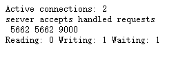

009-nginx状态
1、启动状态
nginx里面有一个模块 ngx_http_stub_status_module，这个模块记录着nginx基本访问状态。要想使用这个模块，在安装的时候需要带上参数--with-http_stub_status_module
对于已安装的，可以通过nginx -V来看下是否有安装好该模块了
当安装好该模块，我们可以在server里面开启
server {
listen 80;
server_name aaa.com;
location / {
stub_status on; # 开启查看状态，开启后root的配置就不生效了，直接展示的是状态的页面
# root /root/svr/aaa;
# index index.html index.htm;
}
}
当访问 http://aaa.com 的时候，页面不在展示我们指定目录的前端代码了，而是直接展示下面截图

2、解析
Active connections: 2
server accepts handled requests
5664 5664 9028
Reading: 0 Writing: 1 Waiting: 1
上面几个的意思:
第1行:
Active connections: 2表示nginx正处理的活动连接数2个第2-3行:
server accepts handled requests 5664 5664 9028- 第1个server表示nginx启动到现在一共处理了5664个链接
- 第2个accepts表示nginx启动到现在共成功创建5664次握手（请求丢失数=握手数-上面的server的链接数），两者相减为0表示到目前没有丢失请求
- 第3个handled requests，表示共处理了9028次请求，
第4行:
Reading: 0 Writing: 1 Waiting: 1- 第1个Reading表示nginx读取到客户端的header信息数
- 第2个Writing表示nginx放回客户端的header信息数
- 第3个Waiting表示nginx已经处理完正在等候下一次请求指定的驻留连接，开启keep-alive的情况下，这个值等于
active - ( reading + writing )
3、只允许部分人看到
因为nginx的状态比较私密，不能给外部人看，所以建议加上权限的控制
server {
listen 8008;
stub_status on;
deny all; # 禁止所有人看
allow 218.13.14.199; # 允许 IP=218.13.14.199 的查看
}
IP地址可以通过log日志查看